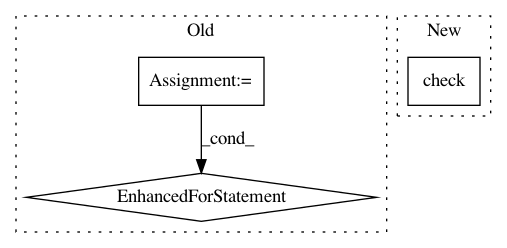

5b8b1c9419fca922ae4e670d1d6c798f833f0268,autokeras/tasks/structured_data.py,SupervisedStructuredDataPipeline,__init__,#SupervisedStructuredDataPipeline#Any#Any#Any#,18
Before Change
"Column_types should be either "categorical" "
"or "numerical", but got {name}".format(name=column_type))
if column_names and column_types:
for column_name in column_types:
if column_name not in column_names:
raise ValueError("Column_names and column_types are "
"mismatched. Cannot find column name "
"{name} in the data.".format(name=column_name))
super().__init__(inputs=inputs,
outputs=outputs,
**kwargs)
self._target_col_name = None
After Change
inputs = input_module.StructuredDataInput()
inputs.column_types = column_types
inputs.column_names = column_names
self.check(column_names, column_types)
super().__init__(inputs=inputs,
outputs=outputs,
**kwargs)
self._target_col_name = None
In pattern: SUPERPATTERN
Frequency: 3
Non-data size: 3
Instances
Project Name: keras-team/autokeras
Commit Name: 5b8b1c9419fca922ae4e670d1d6c798f833f0268
Time: 2020-04-07
Author: abraham.g.sebastian@gmail.com
File Name: autokeras/tasks/structured_data.py
Class Name: SupervisedStructuredDataPipeline
Method Name: __init__
Project Name: ray-project/ray
Commit Name: f6bd12eb18056ea0ca0364b6e458f96ec0ff7585
Time: 2020-07-30
Author: sven@anyscale.io
File Name: rllib/utils/schedules/tests/test_schedules.py
Class Name: TestSchedules
Method Name: test_polynomial_schedule